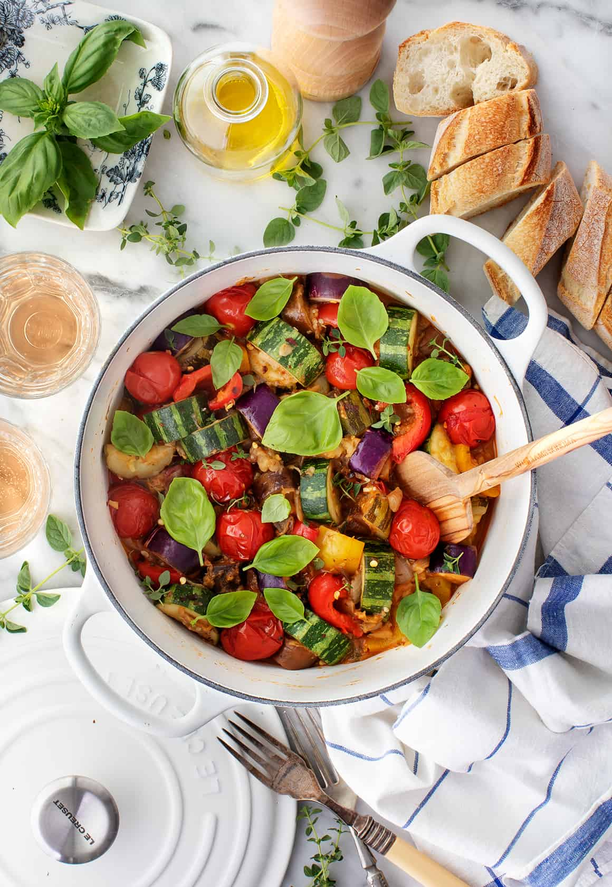

Ratatouille

Description
Bright, flavorful, and flecked with herbs, this ratatouille recipe showcases summer produce at its best. Enjoy it with your favorite rosé and good bread!
Ingredients
- 3 tablespoons olive oil
- 1/2 yellow onion, coarsely chopped
- 1 pound eggplant
- 1 teaspoon sea salt
- 3 cups cherry tomatoes
- 1 red bell pepper
- 2 medium zucchini
Steps
- Preheat the oven to 400°F.
- Heat 2 tablespoons olive oil in a Dutch oven over medium heat. Add the onion, eggplant, and ½ teaspoon salt and cook until soft, about 8 to 10 minutes.
- Add the garlic, half the tomatoes, the bell pepper, zucchini, thyme, herbes de Provence, oregano, the remaining salt, and pinches of black pepper and red pepper flakes. Cook for 10 more minutes, stirring occasionally. Stir in 1 tablespoon of the vinegar. Top with the remaining cherry tomatoes and bake uncovered for 17 to 20 minutes until the tomatoes start to burst.
- Remove from the oven, stir in the remaining 1 tablespoon vinegar, drizzle with olive oil, and garnish with fresh herbs. Season to taste with more salt, pepper, as desired.